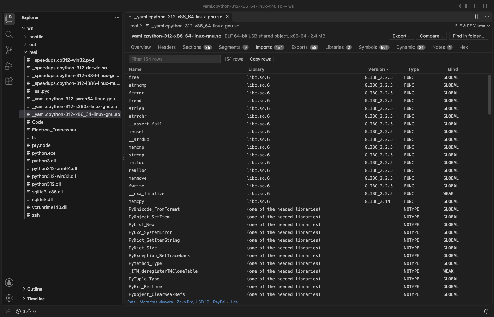

Handleidingen in het Nederlands
De secties en imports van een ELF-, EXE- of DLL-bestand bekijken in VS Code
Installeer de gratis ELF Viewer & PE Viewer en klik op een .so-, .exe-, .dll- of .dylib-bestand. Je krijgt tabbladen voor de headers, secties, segmenten, imports, exports en symbolen van Linux ELF-, Windows PE- en Apple Mach-O-bestanden, plus een hex-weergave, zonder readelf, objdump of dumpbin. Elke weergave van een bestand is gratis en alleen-lezen. Zovo Pro (eenmalig USD 19) voegt drie tools toe: export als JSON of C-header, twee binaries vergelijken en een naam zoeken in een map met binaries. Elke tool kun je 3 keer gratis proberen.
Gratis, MIT-licentie. Extensie-ID zovo.zovo-elf-pe-viewer, versie 0.1.5.
Deze handleiding is ook beschikbaar in English · Čeština · हिन्दी · Bahasa Indonesia · 한국어 · Русский · Svenska · ไทย · Türkçe · Українська · Tiếng Việt · 繁體中文 · Deutsch · Español · 日本語

Stappen in VS Code
- Installeer ELF Viewer & PE Viewer via de Marketplace, of druk op Ctrl+P (Cmd+P op macOS) en voer
ext install zovo.zovo-elf-pe-vieweruit. - Klik in de Explorer op een
.exe-,.dll-,.sys-,.so-,.dylib-,.elf- of.ko-bestand. Het opent in de viewer. Klik bij een objectbestand (.o) of een Linux- of macOS-executable zonder extensie met rechts op het bestand en kies Open in ELF & PE Viewer. - Eerst zie je het tabblad Overview. Dat toont de architectuur, het bestandstype, het entry point, de gekoppelde libraries, security-flags zoals ASLR en DEP, de build ID en het PDB-pad.
- Open het tabblad Sections of Imports. Bij ELF-imports zie je de library en de symboolversie van elke functie. PE-bestanden krijgen ook data directories, delay-load imports en resources, en Mach-O-bestanden krijgen load commands.
- Typ in het filtervak boven een tabel om de rijen te beperken, en klik op een kolomkop om te sorteren. Copy rows zet de rijen als tekst met tabs op het klembord.
- Klik op de link
bytesvan een sectie of segment om de bytes ervan gemarkeerd te zien in het tabblad Hex. In het tabblad Headers opent Show every header field with its offset de veldenboom.
Wat gratis is en wat Zovo Pro toevoegt
Elke weergave van een bestand is gratis, zonder inloggen: het overzicht, alle tabellen, filteren, sorteren en kopiëren, de hex-weergave en de veldenboom. De extensie schrijft nooit naar de binary en doet geen netwerkverzoeken.
Wil je weten welke binaries in een buildmap een functie importeren of tegen een library linken, dan leest deze tool elk ELF-, PE- en Mach-O-bestand in de map en toont elke treffer met het bestand. Gewone tekst vindt elk deel van een naam, en een /regex/ werkt ook. Je hebt het antwoord in één zoekopdracht, in plaats van elke binary te openen of readelf of dumpbin bestand voor bestand uit te voeren.
Find a symbol or import in a folder gebruiken (Zovo Pro)
- Open een binary en klik bovenaan de viewer op Find in folder…, of voer "ELF & PE Viewer: Find a symbol or import in a folder (Pro)" uit vanuit het Command Palette.
- Typ een naam zoals
CreateFileWofSSL_read, of een regex zoals/^_?pthread_/. De tool doorzoekt de workspacemap, of vraagt je om een map. - Vanuit de viewer openen de treffers in een tabblad Find met een knop Copy. Vanuit het Command Palette verschijnen ze in een lijst, en een klik opent die binary.
- Escape, of een zoekopdracht zonder treffer, kost geen gratis poging.
Find a symbol or import in a folder werkt 3 keer gratis op je computer voordat om een licentie wordt gevraagd. Er is geen pop-up en geen aftelling.
Zovo Pro kost eenmalig USD 19. Het is geen abonnement, en de licentie zet de Pro-tools aan in alle Zovo-extensies, niet alleen in ELF Viewer & PE Viewer. Na betaling met een kaart (Stripe) staat je licentiesleutel op de volgende pagina. Voer in VS Code "Zovo Pro: Enter Zovo Pro license key" uit vanuit het Command Palette en plak de sleutel. De sleutel wordt op je eigen computer gecontroleerd, zonder netwerkverbinding. Betaal je via GitHub Sponsors, kies dan het niveau "$19 one time" en voer daarna "Zovo Pro: I already paid: unlock with GitHub Sponsors" uit.
Een team van 5 personen betaalt eenmalig USD 59 (met een kaart). Alle regels en alle Pro-tools staan op de Zovo Pro-pagina (Engels).
Stappen in Cursor, Windsurf of VSCodium
- Open de Extensions-weergave met Ctrl+Shift+X (Cmd+Shift+X op macOS).
- Zoek
zovo.zovo-elf-pe-vieweren klik op Install. Cursor, Windsurf en VSCodium installeren extensies van Open VSX, waar deze extensiezovo/zovo-elf-pe-viewerheet. - Heeft je editor geen galerie, download dan het .vsix-bestand van de pagina op Open VSX en voer "Extensions: Install from VSIX..." uit.
- Daarna werkt alles zoals in VS Code.
Wat ELF Viewer & PE Viewer doet
- ELF-bestanden in 32 en 64 bit, little- en big-endian, zoals
.so,.o,.ko,.elf,.axfen Linux-executables. - PE32- en PE32+-bestanden zoals
.exe,.dll,.sys,.efien.pyd, met imports op naam en ordinal, exports met forwarders en de .NET-runtime-header. - Mach-O in 32 en 64 bit, en universal binaries. Kies bovenaan de architectuur, zoals arm64 of x86_64.
- Tabellen tot 100.000 rijen, die je kunt filteren, sorteren en kopiëren.
Wat het niet doet
- De extensie is alleen-lezen en heeft geen disassembly.
- Statische libraries (
.a), Java class-bestanden, WebAssembly en DEX-bestanden worden niet gelezen. - Tabellen stoppen bij 100.000 rijen per tabel, en het lezen stopt na 10 seconden. De viewer meldt het als dat gebeurt.
- Bestanden op een extern of virtueel bestandssysteem worden tot 256 MB gelezen. Find in folder doorzoekt alleen lokale mappen.
.o-bestanden en bestanden zonder extensie openen niet standaard. Gebruik Open in ELF & PE Viewer in het rechtsklikmenu.
Veelgestelde vragen
Is het gratis?
Elke weergave van een bestand is gratis, zonder inloggen. De drie Pro-tools, export als JSON of C-header, twee binaries vergelijken en een naam zoeken in een map, kun je elk 3 keer gratis gebruiken. Daarna heb je Zovo Pro nodig, eenmalig USD 19 voor alle Zovo-extensies.
Heb ik readelf, objdump of dumpbin nodig?
Nee. De extensie leest ELF-, PE- en Mach-O-bestanden zelf, zonder dat er een ander programma geïnstalleerd hoeft te zijn.
Kan het de binary wijzigen?
Nee. De extensie leest het bestand alleen en schrijft er nooit naar. De Pro-export slaat een nieuw JSON- of headerbestand op waar jij kiest.
Werkt het in Cursor?
Ja. Volgens de README werkt de extensie in Cursor, Windsurf en VSCodium, en ze staat op Open VSX, dus deze editors kunnen haar installeren.
Meer informatie
De Engelse handleiding heeft meer details en andere opties. Elke functie en instelling staat op de pagina van ELF Viewer & PE Viewer (Engels).
Feiten gecontroleerd op 13 november 2026 met de huidige versie in de Marketplace.